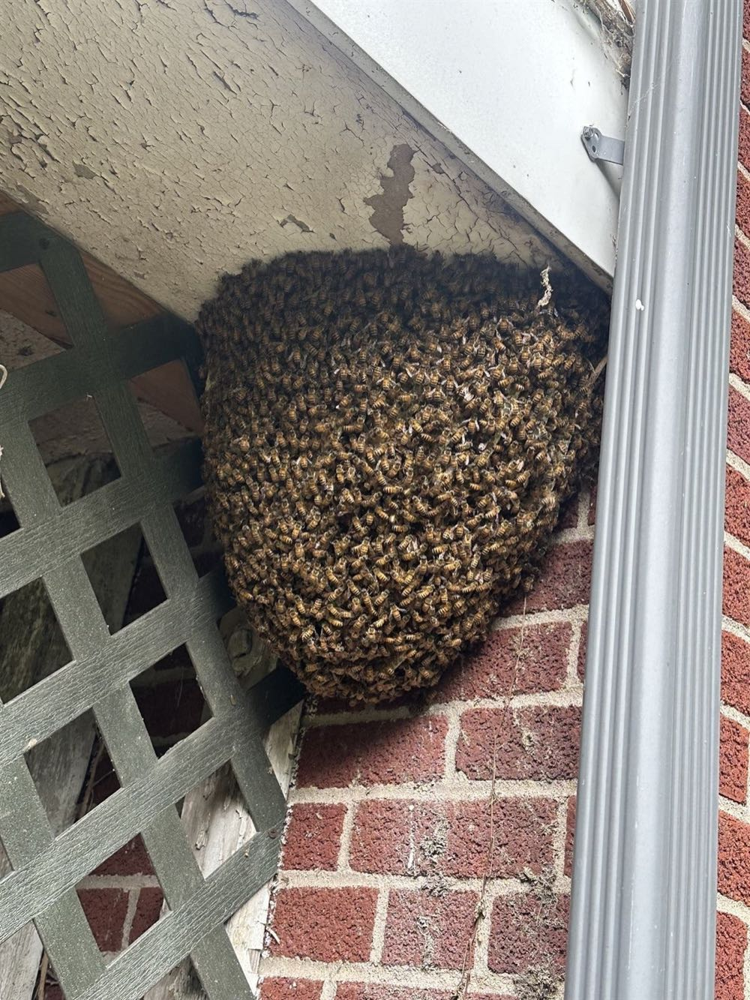
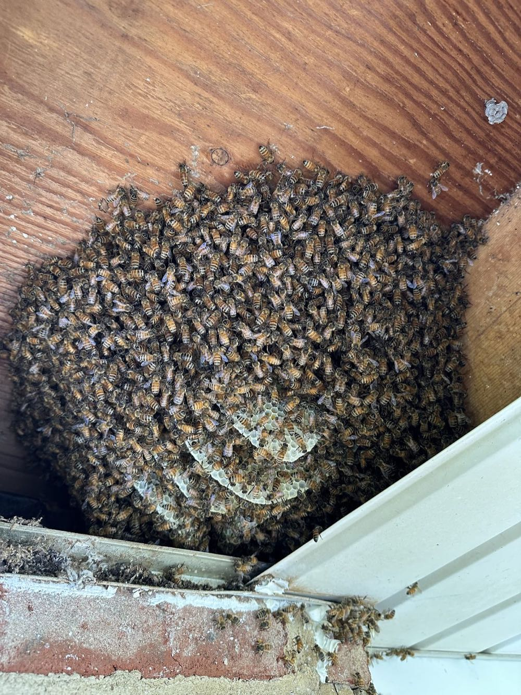

Live, humane honey bee removal — swarm capture, structural cutouts, and trap-outs across Dauphin, Cumberland, Lebanon, Perry, York, and Lancaster counties. We're a working beekeeper ourselves. Every colony we collect goes to a working apiary, never extermination.
Live Removal Estimate — Call or Text 717-379-3248Honey bees (Apis mellifera) are not yellow jackets, hornets, or wasps. They're a protected pollinator species, a national agricultural asset, and — when removed correctly — a healthy resource that can be relocated to a working apiary. Spraying a honey bee colony in a wall is illegal in many situations, ecologically destructive, and creates a structural mess (a dead colony rots, attracts pests, and leaves wax and honey behind that need to be removed anyway).
We're listed swarm collectors with the Pennsylvania State Beekeepers Association and the Capital Area Beekeepers Association. The Alleman Apiary (our beekeeping operation) takes every colony we collect. Removal is live, humane, and ends with the colony in a managed hive — not a trash bag.


A swarm is a temporary cluster of bees on a tree branch, fence post, mailbox, or low shrub — usually a baseball to basketball-sized ball of bees. They're docked between hives, looking for a new home. Easiest removal there is, and it's free. Call us within a day or two — they'll leave on their own and find a wall void if you wait.
For colonies that have established inside a wall, soffit, ceiling, chimney, or shed. Requires opening the structure to access the comb. We coordinate with siding/drywall repair where needed. Significantly more involved than swarm capture, priced accordingly.
For colonies in spots that can't be opened — masonry chimneys, certain tree cavities, historic structures. We install a one-way exit cone with a bait hive. Bees leave to forage, can't return, and accumulate in the bait hive over 4–6 weeks. Slowest method but sometimes the only option.
Often what looks like honey bees is actually yellow jackets, bumble bees, carpenter bees, or paper wasps. We identify by photo (text us one) before quoting — pricing and approach are wildly different. Don't pay honey bee removal pricing for a yellow jacket nest.
Cutouts leave a structural opening that needs siding, drywall, or soffit repair. We don't do the repair work ourselves but we coordinate with contractors we trust if you need a referral.
Every removed colony gets inspected for varroa mites, brood disease, and queen health at the apiary. Healthy colonies join managed hives; struggling colonies get split, requeened, or combined as needed.
Dauphin County: Harrisburg, Hershey, Hummelstown, Palmyra, Linglestown, Colonial Park, Susquehanna Township, Lower Paxton.
Cumberland County: Camp Hill, Mechanicsburg, Carlisle, Lemoyne, Wormleysburg, New Cumberland, Enola, Boiling Springs, Dillsburg.
Lebanon County: Lebanon, Annville, Cleona, Palmyra (Lebanon side).
York County: Mount Wolf, Manchester, Dillsburg-area properties on the York side.
Text us a photo at 717-379-3248 first if you can — saves time and lets us identify the species before we come out. Working beekeepers. Serving all of Central Pennsylvania.
Call or Text 717-379-3248